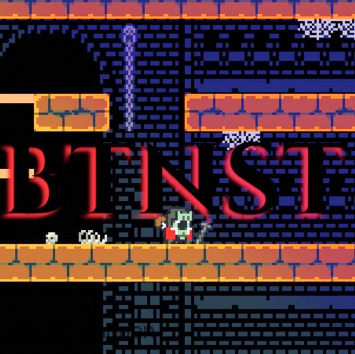

2016 - 2017
PSG Turvalla sain kattavimman ensi kosketuksen vartiointialaan. Työskentelin aluksi vastaanottokeskuksissa
jonka jälkeen siirryin piirivartiointiin. Piirivartioinnin ohella toimin myös henkilönsuojaustehtävissä,
graffitien torjunnassa sekä myös korkeanturvallisuuden kohteissa.
2017 - 2018
Vantilla työskentelin ainoastaan terveyskeskuksissa. Päivittäisiin työtehtäviini kuului kiinteistön pienet
huoltotyöt, ovenavaukset henkilökunnalle sekä asiakasneuvontaa.
2018 - 2020
Seconilla työskentelin vuoroesimiehenä vaativassa kauppakeskusympäristössä. Pävittäisiin työtehtäviini kuului
kulunvalvonnalliset tehtävät, työvuorojen paikkaukset, työvuorolistojen laatiminen, kenttäjohtaminen, uusien
työntekijöiden perehdyttäminen.
Suunnittelin myös exceliin käyttäen VBA:ta automaattisen tuntiensyöttölistan, jota
hyödynsin työvuorolistoja laatiessani. Tämä säästi minulta rutkasti aikaa ja vaivaa. Lista tunnisti kunkin henkilön
automaattisesti nimen perusteella ja laski hänelle määrätyt tunnit. Lisäksi lista näytti, mikäli henkilölle oli määrätty
enemmän tunteja kuin 120h kolmiviikkoisjaksossa. Tämä oli ensimmäinen kerta kun hyödynsin omaa koodiani työympäristössä.
2020 - Nykyhetki
Securitaksella työskentelen Palvelukeskuksessa palvelukeskuspäivystäjänä. Työnkuvaani kuulluu laajasti eri tietoteknistenjärjestelmien kokonaisuuksien hallinta sekä myös asiakaspalvelu. Olen allekirjoitanut vahvat salassapitomääräykset, joten tästä työstä en voi tämän enempää kertoa.
2018 - 2020 Nykyhetki
Klikkaa kuvaa päästäksesi Instagran sivulleni

Ylhäällä otos pelistäni, jota olen työstänyt töiden ohella vuodesta 2018, silloin kuin jää vapaa-aikaa. Pelimoottorina käytän GMS2, joka toimii parhaiten 2D ympäristössä. Tästä syystä myös pelikin on tehty 2D:nä. Pelissä tarkoitus on kerätä erilaisia kenkiä, joista saa erilaisia voimia, jota hyödynnetään pääsemään pelissä eteenpäin. Tällä hetkellä minulla on valmiina ainoastaan 1 taso ja 2 voimakasta vastusta, joista toisen olen täysin itse suunnitellut.
Tarkoituksena olisi saada peli valmiiksi seuraavan 3 vuoden sisällä ja julkaista se itch.io sivustolla.